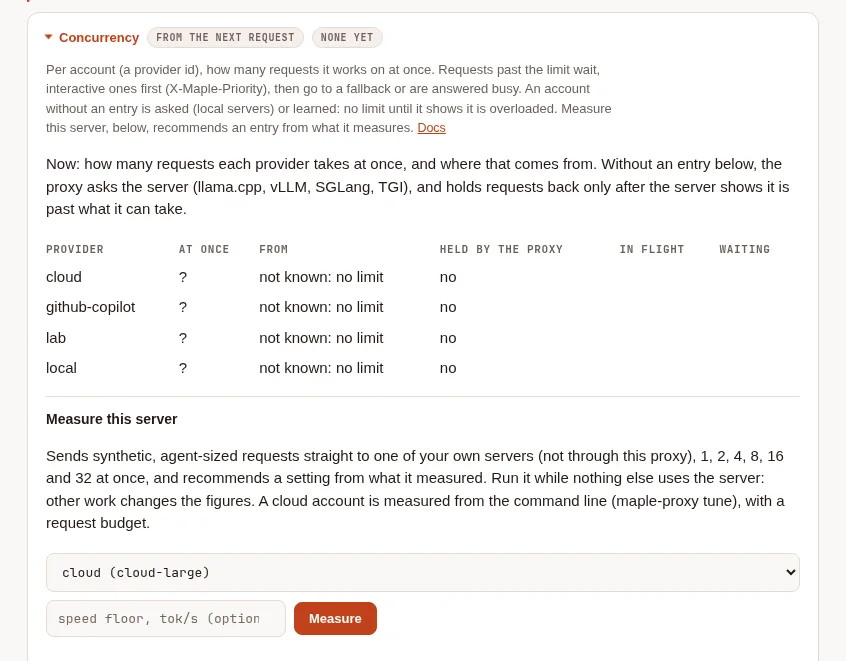
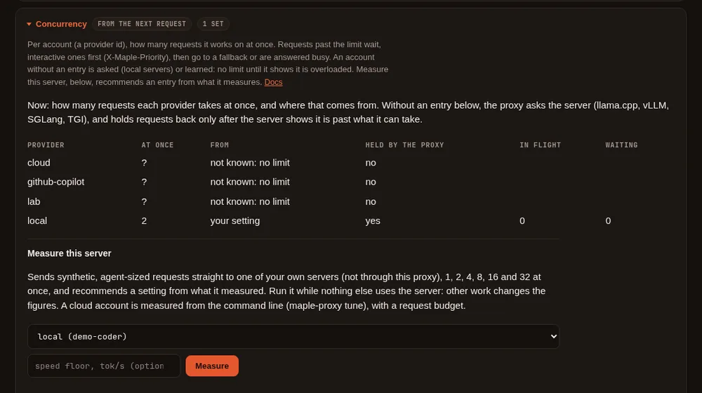

GuidesThe proxy5 min read
Get the most from a local GPU #
On this page
A model server on your own GPU (vLLM, SGLang, llama.cpp) can work on several requests at the same time. Up to a
point, more at once means more work done in all; past it, every request just waits longer. This page shows how to
find that point for your server with maple-proxy tune, and which of three settings to pick.
In plain words #
Run this while nothing else is using the server:
maple-proxy tune --provider my-gpuIt says what it will send and asks before sending anything. Then it sends practice requests the size an agent sends (a long prompt, a medium answer), first one at a time, then 2, 4, 8, 16 and 32 at once, and measures:
- total speed: how many tokens the server writes per second, all requests together;
- speed per request: how fast each single answer comes out;
- wait for the first word: how long a request waits before its answer starts.
It stops early once adding more at once stops helping. Then it recommends three settings:
| Profile | What you get | Pick it when |
|---|---|---|
| Snappy | Each answer stays close to its speed alone (at least two thirds of it, or your own speed floor) | One or two people, and you are watching answers come in |
| Balanced | Most of the server's total speed, before the point where more at once adds little | Several sessions or subagents at once: the usual choice |
| Throughput | The most total speed measured | Batch work and many agents, where no one waits on a single answer |
Each comes with the lines to put in config.yaml, for example:
concurrency:
my-gpu:
max: 16On the setup page, Models & routing, Routing rules, concurrency and moderation, Concurrency has the same measurement: Measure this server, then Apply beside the profile you want. The limit is for everything that uses this server together: every session, person and tool.


A speed floor instead of a number #
If what matters is that no answer gets slower than a speed you can read comfortably, give a floor instead of a fixed number:
concurrency:
my-gpu:
min_request_tps: 100 # each request at least 100 tokens a secondThe proxy then works out the number itself as it runs: it lets in one more request at once while every request still
gets at least 100 tokens a second, and fewer when they drop below it. max next to it caps it. maple-proxy tune
--min-request-tps 100 measures what that floor means on your server.
An example, measured #
One run of this kind of measurement on one GPU (96 GB), serving a 27-billion-parameter model with 4-bit weights through vLLM, with prompts of about 9,000 tokens and answers of about 650 tokens. Measured on 2026-11-22, one server and one model; your GPU, model and request sizes will give other figures, which is why the command measures your own.
| At once | Total tokens/s | Per request tokens/s | Wait for the first token (median) |
|---|---|---|---|
| 1 | 131 | 145 | 0.29 s |
| 2 | 236 | 148 | 0.34 s |
| 4 | 367 | 124 | 0.34 s |
| 8 | 504 | 101 | 0.65 s |
| 16 | 710 | 74 | 0.67 s |
| 32 | 755 | 36 | 1.4 s |
Read with the three profiles:
- Snappy: 8. At 8 at once each answer still came out at about 100 tokens a second, two thirds of its speed alone; at 16 it was half. A floor of 100 tokens a second lands on the same 8.
- Balanced: 16. From 16 to 32 at once the total grew only a little (710 to 755), while each answer got twice as slow.
- Throughput: 32. The most total speed in this run. At 64 at once (not in the table) it made less in all than at 32.
Subagents #
The harness's subagents read the proxy's figure for the server, so keep subagents: {mode: auto} (the default). It
runs at most 16 at once, and the main agent's own requests count too. With one request at a time, subagents wait for
each other; mode: sequential says so plainly.
Technical details #
- The requests go straight to the provider with the proxy's own adapters, not through a running proxy: they do not count in the usage log, budgets or the proxy's own limits. Nothing is sent to the proxy's ports.
- Each level runs closed loop: as many clients as the level, each sending its requests one after another (2 each by
default, at least 4 per level;
--reps N, or--duration 1mper level). The prompt has a long start shared by every request, a part shared by one client's requests and a fresh end, as an agent's requests do, so the server's prefix cache works as it would. - The default size is your typical recent request to that provider in the usage log (prompt plus answer), else about
9,000 prompt and 650 answer tokens.
--prompt-tokensand--output-tokenschoose others. A server that acceptsmin_tokens(vLLM, SGLang) is asked for answers exactly as long as asked, so every level does the same work. - Total is all generated tokens over the level's time. Per request is the median answer's tokens after the first over the time after the first. First token is the median and 95th percentile.
- It stops when a level adds less than 5% to the best total so far, when a level has errors (those levels are left
out of the recommendations), at
--budget-requests, or at Ctrl-C (Cancel on the page), keeping what was finished. - Snappy walks up from the lowest level while each request keeps at least two thirds of its speed there (or the floor). Balanced is the last level before total speed gains less than 25% per doubling of requests at once. Throughput is the most total speed; no profile goes past it. Every recommendation is labelled with its date, levels and sizes: one run on one server. Run it again to see how much it varies.
- A cloud account, a hub or a LiteLLM router (even at a private address) is measured only with
--yesand--budget-requests N, after it shows the plan and, when the model's list prices are known, the most it could cost. Those requests may be billed or shared, and a cloud account's speed moves with everyone else's load. The setup page measures only servers of your own, at most 64 at once, and stops a run after 90 minutes. - Without a terminal and without
--yes, it prints the plan and exits with status 2, sending nothing. - For vLLM and SGLang, the proxy reads the server's own figures while it works, and keeps what each running request held of the server's memory per token of its size. The proxy's estimate for the server while it is idle uses that later (see How vLLM's number is estimated).
--format jsonprints the levels, the profiles and their settings for a script.
See also How many requests a model server takes at once and the keys under Concurrency.